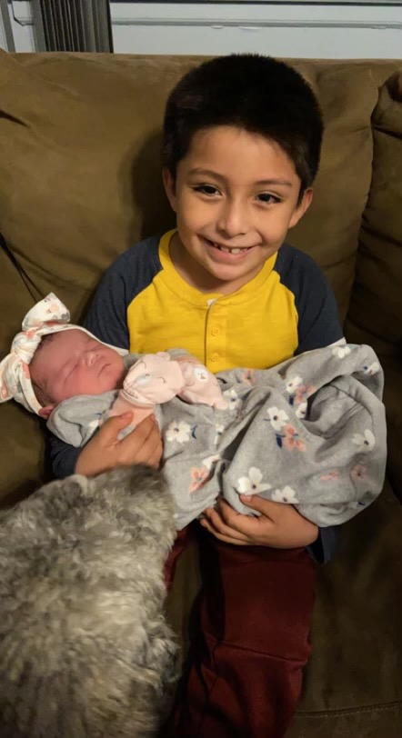
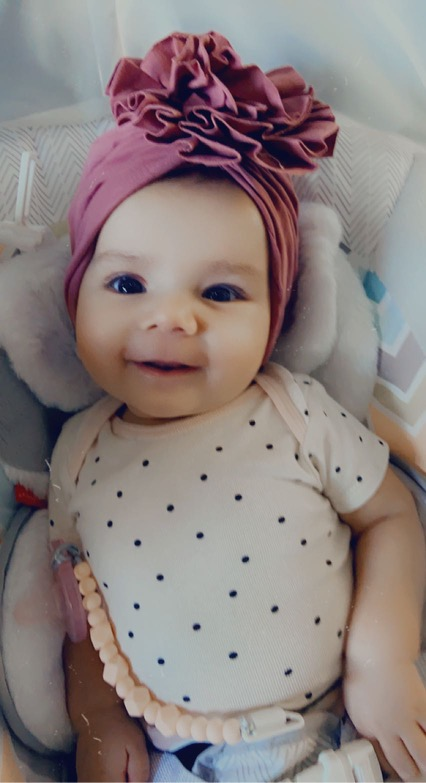

Andrea Bianco
- Andrea is 27 years old
- Andrea is loving and caring mother of 2
- currently Andrea does not have a job and is a stay at home mom.
- Her current intrests consists of:
- Tiktoks
- Food
- Complaining about things Brian didn't do.
Jared Bianco

- Jared is 8 years old
- At jared's core he is a very sweet and thoughtful boy who wants to help whoever he can.
- Currently on summer vation from the 2nd grade and moving to 3rd grade next year.
- some of jared's intrests are:
- Playing on his tablet
- Running around with his cousin james
- Playing fetch with Zoey
- Playing computer games with Dad
Brian Bianco

- Brian is 27 years old.
- Brian is a loving and caring father of 2.
- Currently Brian works at Club Pro Manufacturing as a Production Manager.
- Brian's Interests include but are not limited to:
- World of warcraft
- All technology
- All Apple Products
- Cars
- Electric Bikes/scooters
Gabriella Bianco

- Gabby is 6 months old!
- Gabby is a very fast learner
- Currently Gabby does not have a job. But Andrea and Brian are looking to change that quickly
- Some of gabby's interests are:
- Crying
- Giggling like a insane person
- being cute
- And most importantly needing all the attention all the time.